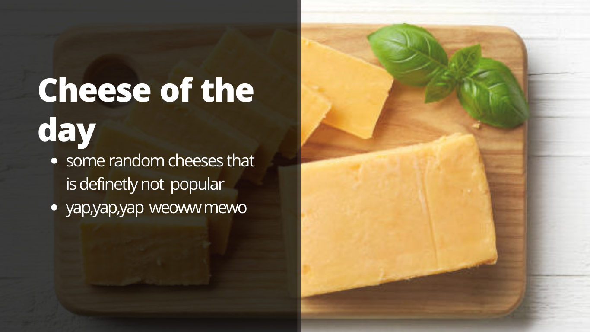
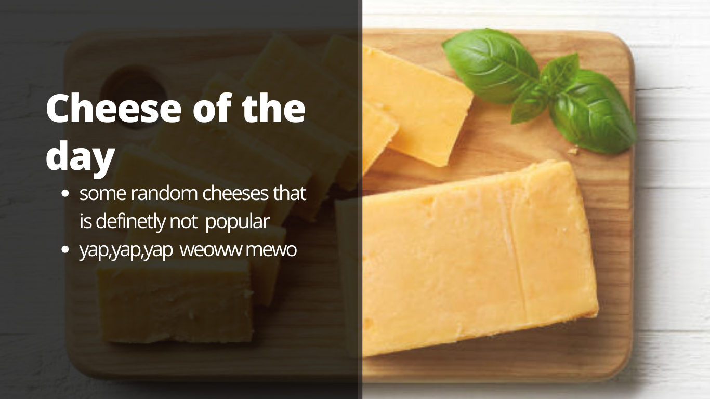
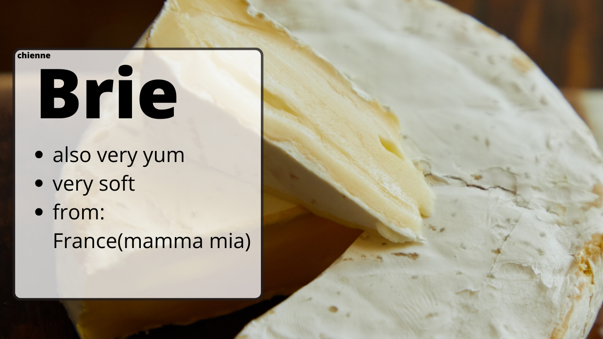
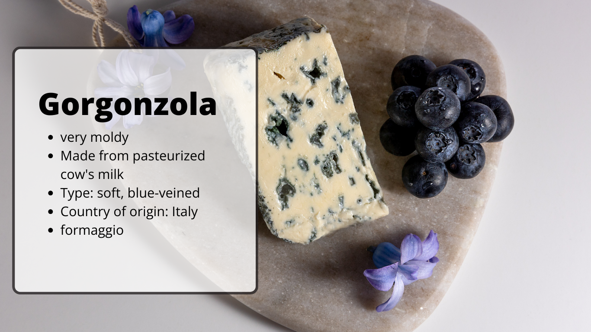
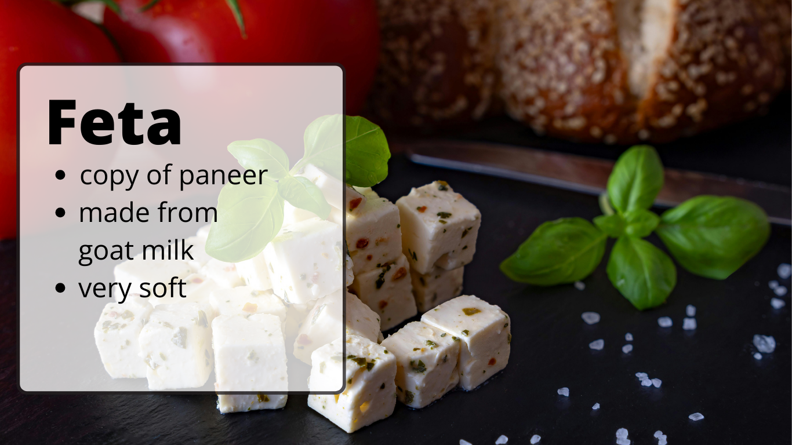
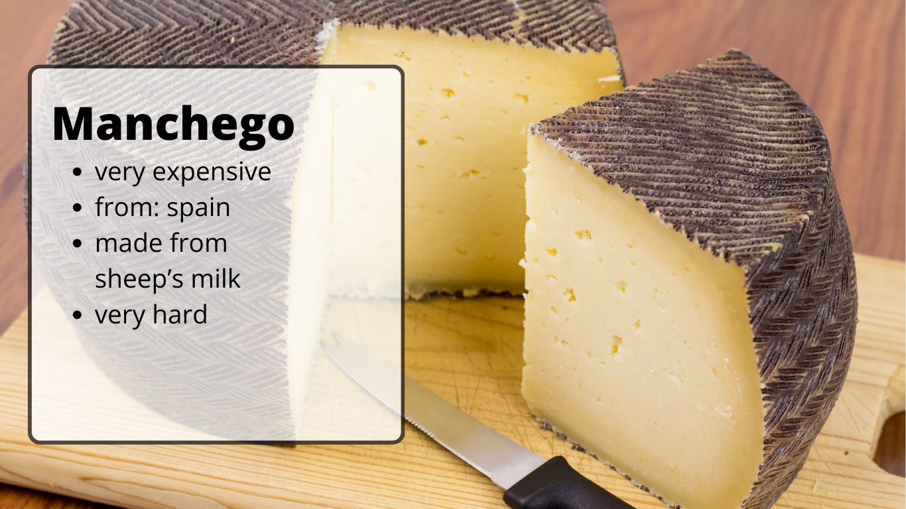
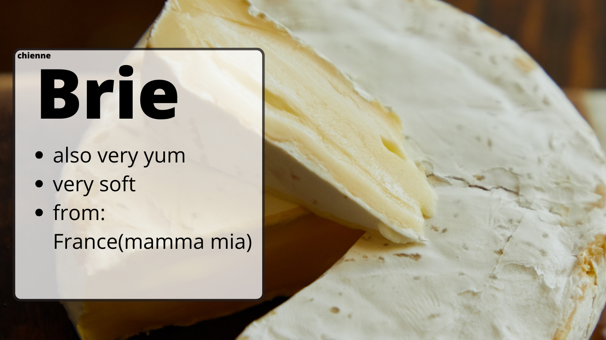
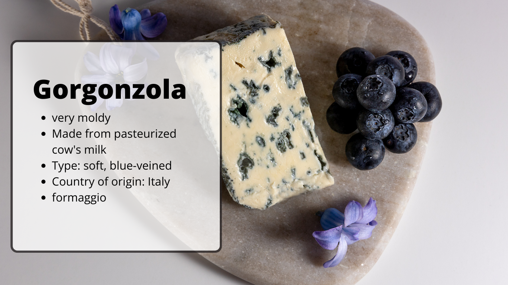
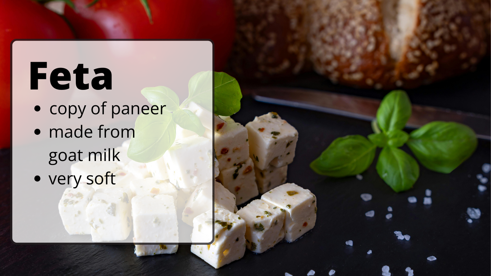
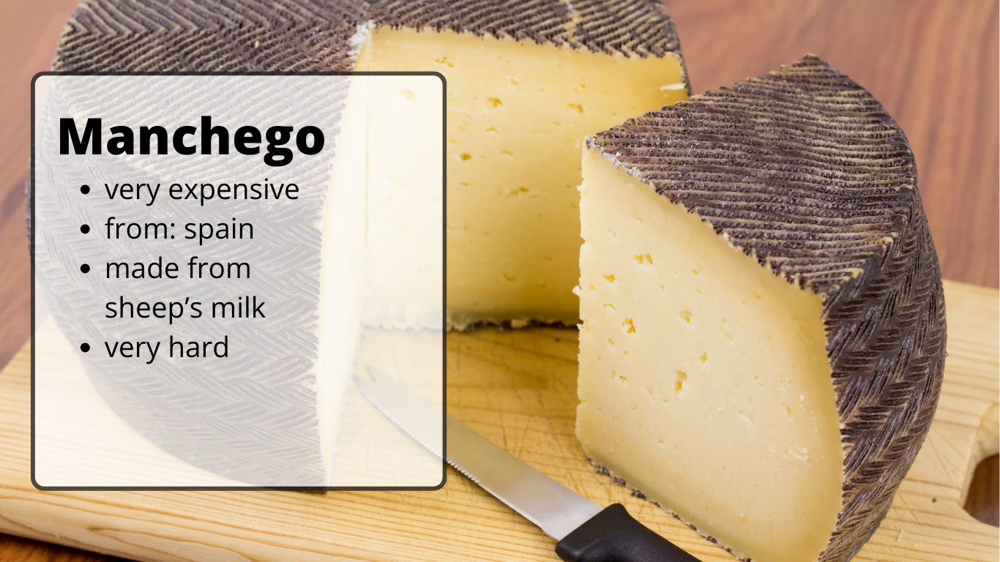

 







Welcome to Cheese is Life!
Discover cheeses from around the world. Browse, learn, and find your favorites!
Cheese is one of the most nutritious foods. It's typically made of cow's milk but also of other mammals, such as sheep, goats, buffalo, reindeer, camels, and yaks. Around 4000 years ago people started to breed animals and process their milk, and that's when cheese happened.
Embark on a cheese adventure by exploring our database of 2046 different types of cheese. Try our recipes. Buy cheese gifts and make someone happy.